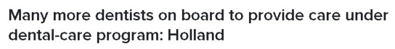
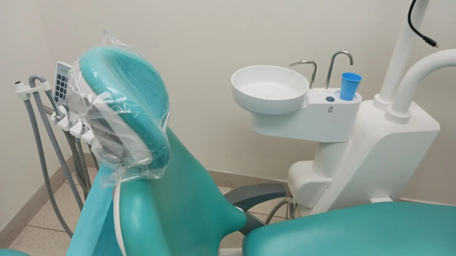
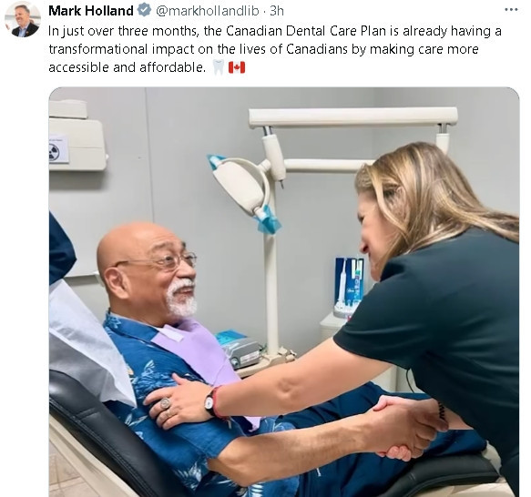
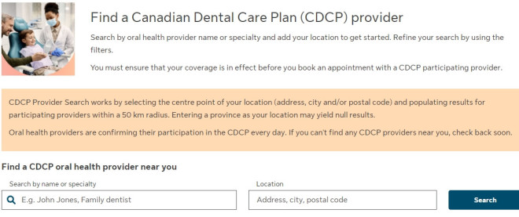

加拿大卫生部长Mark Holland今天表示，同意参与新的全国牙科护理计划的牙医数量大幅增加，同时注册保险计划的患者也迅速增加到230万人。


政府从5月份开始接受老年人在该计划下提交的牙科保险申请，并已将资格扩大到符合条件的18岁以下儿童和有残障税收抵免资格的人。
有约230万患者迅速注册，但吸引牙医参与提供护理一直是一个挑战。
截至上个月，大约有11,500名牙医、牙科卫生师和假牙师注册参与该计划，占加拿大牙科专业人员的不到50%。
牙医似乎比其他提供者更不愿意注册，因为全国各地的牙科协会对该计划的设计和对牙医的行政负担表示担忧。
Holland说，现在有16,612名牙医参与，占加拿大所有牙医和牙科专家的约75%。
“过去一个月，随着报名参与的牙医增加，情况发生了巨大变化，”他在周二下午的一次采访中说道。

周三早上，Holland在渥太华市中心的一家牙科诊所举行新闻发布会，宣布这一进展。他说，这一增加可能得益于上个月一个变化，即允许牙医逐案参与而不是提前注册。
该计划是自由党和新民主党之间协议的产物，以防止提前选举，换取在关键优先事项上的进展。
两党的目标是让所有没有保险且家庭收入低于9万加元的人都有资格获得该保险，预计到2025年将全面开放注册资格。
Holland说，全国一些地区的提供者参与度仍然较低，包括阿尔伯塔省和新不伦瑞克省。他说，这个问题在已经服务不足的农村地区尤为严重。
如果该计划要取得成功，政府不仅需要所有牙科护理提供者注册加入，还需要更多的专业人员来服务，预计到明年底，有资格注册患者将达到约900万人。
以下是关于牙科保险一些常见问题解答。
如何找到一位参与牙科保险的专业人士？
联邦政府与永明保险公司（Sun Life）签约实施计划，该公司近期推出了一个可搜索的数据库，涵盖所有参与的牙科专业人士。

为何我的牙医不加入牙科保险计划？
一些牙医不愿加入，是因为他们担忧将承担大量文书工作。
我是否要换一位牙医？
牙医有权选择是否通过牙科保险计划接收病人，如果牙医决定不加入该计划，患者可能要更换牙医。
我是否能够在一位没有加入保险计划的牙医那里接受承保的牙科护理？
是的，今年7月1日开始，政府允许牙医在不加入保险计划的前提下，直接提交报销申请。
我是否可以获取免费的牙科护理？
联邦政府已制订了牙科保险计划的收费标准，这标准略低于各省牙医协会公布的收费指南，但不是“免费”的牙科护理。
与私人保险计划一样，牙科保险计划仅承担部分服务费用，患者将被收取差价。家庭净收入在9万元以下的患者符合资格，家庭净收入介于7万元至9万元之间需要自付一部分费用。具体而言，家庭净收入7万元至8万元，需要自付40%；家庭净收入8万元至9万元，需要自付60%。
哪些牙科护理项目是承保的？
大多数常规的牙科护理服务在承保范围内，包括：洗牙、X光检查、补牙、根管治疗和假牙。一些复杂的项目如局部假牙和牙冠，需要联邦政府预先授权付款，但预先授权付款要等至今年11月开始实施。
具体可查看政府的网站：
https://www.canada.ca/en/services/benefits/dental/dental-care-plan/coverage.html
我何时符合牙科保险计划的资格？
从今年5月1日起，70岁和以上的加拿大居民可获取承保的牙科护理服务，65岁至69岁的长者开始登记加入。登记网址：
https://www.canada.ca/en/services/benefits/dental/dental-care-plan/apply.html#apply-online